Stand 24.09.2026 · Bebilderter Projektguide. Historische Originaldokumente sind separat beigefügt; konkrete Zahlenwerte daraus können zu älteren CivIdle-Builds gehören.
originale. Die Markdown-Dateien unter kompendium enthalten den dokumentierten Projektstand.Das Projekt betrachtet einen Lauf als vollständige Kette: Spielzustand erkennen, Aufbau und Ressourcenversorgung herstellen, Forschung freischalten, eine passende Große Persönlichkeit auswählen, Wiedergeburt ausführen und die neue Karte zuverlässig bestätigen. Für Vergleiche zählt die vollständige Zykluszeit full_cycle_sec, nicht nur ein einzelner Teilabschnitt.
| Abschnitt | Praxis | Prüfpunkt |
|---|---|---|
| Aufbau | Frühe Gebäude und Ressourcenversorgung | Gebäudezustand frisch erkennen; Engpässe nicht mit einem erfolgreichen Klick verwechseln. |
| Forschung | Unter anderem Mauerwerk und Bronzeverarbeitung als frühe Wegpunkte | Freischaltung wirklich bestätigen. |
| Große Persönlichkeit | Aktuelle Auswahl lesen und erst dann bestätigen | Name/Bild/Position aktuell prüfen. |
| Wiedergeburt | Ansicht → Bestätigung → neue Karte | Neue Karte muss nach dem Wechsel sichtbar verifiziert sein. |
Frühe Holzversorgung und wichtige Gebäudereferenz im Projekt.
Referenz für den Stein-/Baustoffpfad.
Frühe Siedlungs-/Bevölkerungsreferenz.
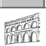
Weiterführende Gebäudereferenz aus dem gespeicherten Bildbestand.
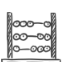
Beispiel einer späteren Gebäudereferenz.
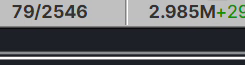
Früher Wegpunkt in den getesteten Bronze-Abläufen.
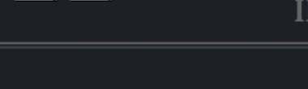
Zentraler Zielpunkt der frühen Rebirth-Testreihen.
Beispiel für einen späteren Forschungseintrag.
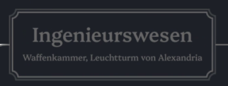
Weitere Forschungsreferenz aus dem Projektbestand.
Unbestätigte Kosten oder Boni werden nicht erfunden. Zahlen gelten erst als verbindlich, wenn sie an eine überprüfte Spielversion oder Originalquelle gebunden sind.
Die Auswahl soll nicht nur über eine feste Bildschirmposition erfolgen. Die gespeicherten Bilder zeigen echte Projekt-Referenzen, mit denen Namen und aktuelle Auswahlzustände geprüft werden können.
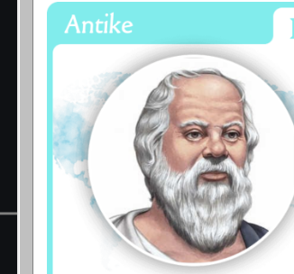
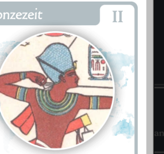
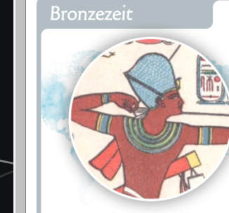
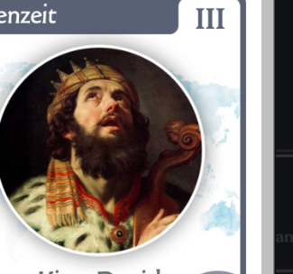
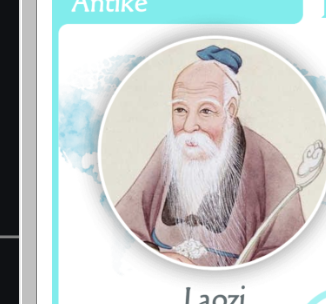
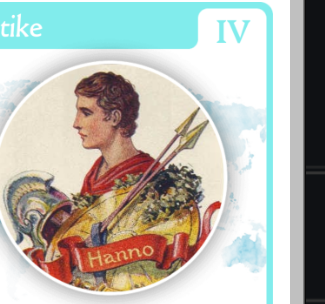
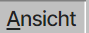
Referenz für die geöffnete Wiedergeburt-Ansicht.
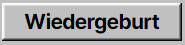
Referenz für den Bestätigungsschritt.
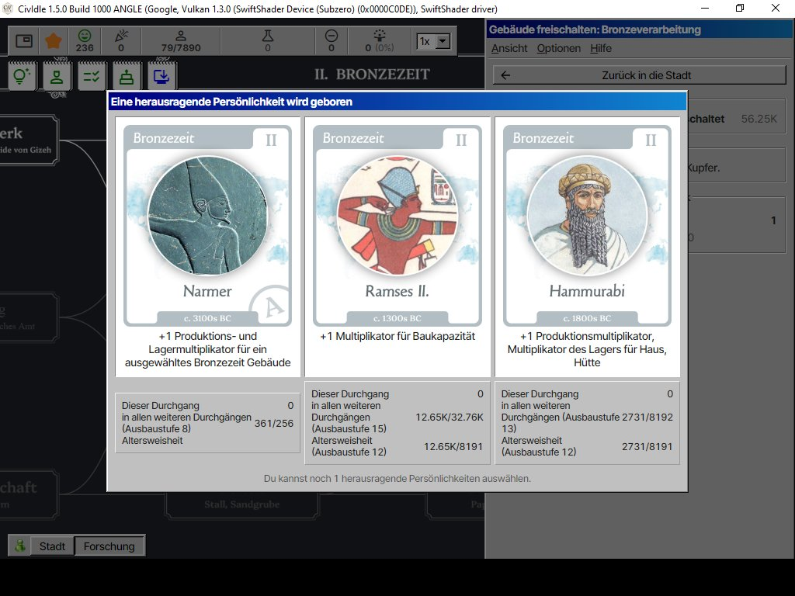
Gespeicherter Diagnosezustand aus einem realen Projektlauf.
Neue Strategien werden zuerst mit wenigen Screening-Läufen geprüft. Nur stabile Kandidaten werden länger getestet. Verglichen wird der Median der vollständigen Zykluszeit; ein einzelner sehr schneller Lauf reicht nicht als Stabilitätsnachweis.
full_cycle_sec3-Run Screening20-Run StabilitätMedian
Mitgeliefert sind Status-App-Anleitung, Bot-Wissensstand, dokumentierter Rebirth-/Teststand, historische Kompendien und frühere Guide-Dateien. Noch vollständig gegen den jeweils aktuellen Spielbuild auszubauen sind insbesondere Baukosten, Bauzeiten, Produktions- und Verbrauchswerte, Lager/Transport, vollständige Forschungsdaten und Leveltabellen bis Level 100.
kompendium/CIVIDLE_KOMPENDIUM_STAND.md – Umfang, Quellenlage und offene Kapitel.kompendium/BOT_WISSENSSTAND.md – dokumentierter Bot-/Rebirth-Stand.kompendium/APP_ANLEITUNG.md – Status-EXE und Bedienung.originale/CivIdle_Ultimatives_Kompendium_Build968_2026-09-06.pdf – historisches Original-PDF.bilder/ – alle hier verwendeten CivIdle-Referenzbilder.